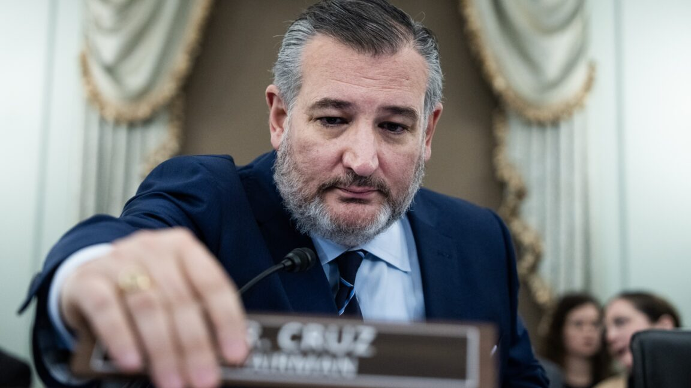

Technology · 19 Nov 2026
Ted Cruz-led committee approves Trump FCC nominee 15-0 as Democrats boycott vote

Democrats try to prevent quorum, say Thumann lied about not working on media issues.
Multiple independent publishers are reporting on the same development: Ted Cruz-led committee approves Trump FCC nominee 15-0 as Democrats boycott vote.
The available reports place the development in the Technology category. The accounts were compared for agreement on the central event rather than simply shared names or broad topics.
One of the available reports describes the development this way: Democrats try to prevent quorum, say Thumann lied about not working on media issues.
Readers should consult the linked source reports for additional context, updates and details that may change as the story develops.
Sources
This article was produced by the C. O. Eric AI Newsroom from the cited sources. It is published only after automated evidence and safety checks.